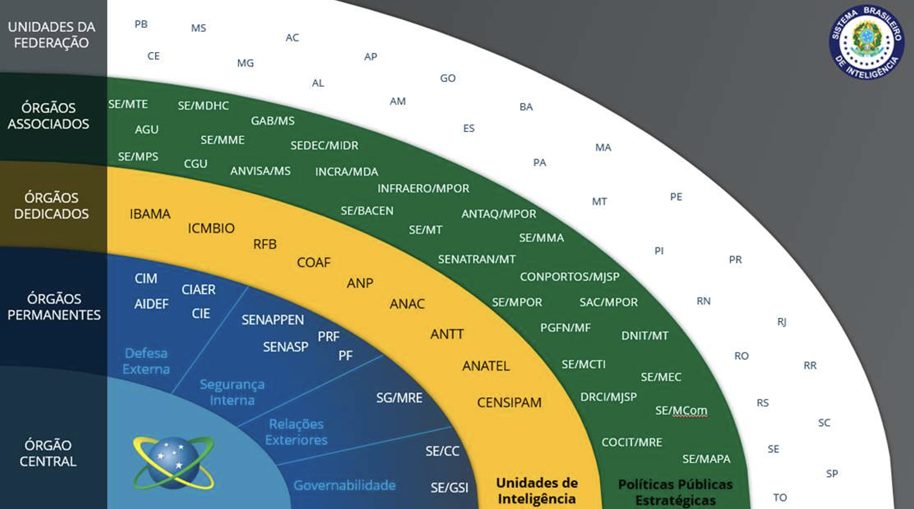

Órgãos por nível de integração
INTELIGÊNCIA

Níveis de integração (do centro para fora)
Órgão Central
Agência Brasileira de Inteligência (ABIN) — coordena o Sistema.
Órgãos Permanentes
Núcleo estável da inteligência de Estado (ANAC, ANTT, Polícia Federal, entre outros).
Órgãos Dedicados
Órgãos com atuação dedicada em inteligência setorial (MPOR, entre outros).
Órgãos Associados ANTAQ
Entes que cooperam de forma complementar — a ANTAQ integra este nível (SE/MTE, AGU, CGU, ANVISA, entre outros).
Unidades da Federação
Estados e o Distrito Federal, na camada mais externa de integração.
Eixos transversais de atuação
Trilha Técnica da Fiscalização · SFC / GPF — ANTAQ
39 / 61